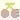

2014/0511Sunソーダ味とバニラ味
みなさまこんばんわ！
ブログ遅くなりました(°_°)！
未央奈のイヤリングのさくらんぼを狙う
より目ができなくて怖い顔に
なってしまった伊藤純奈と
より目が得意でさくらんぼを
勢いよく狙ってるのに困る
北野日奈子
7日の夜に、ひなデビルのブログを
書いていたら突然画面が真っ赤になり
電源が落ちてそのあと携帯が起動しなくなってしまい、壊れていました(´･_･`)
8日の夜に新しいのに変えたのですが、
データが全部消えてしまい
携帯が1からのスタートで
ヘコんでました。。。
ひなデビルの画像ももちろん
今までの画像や動画やいろんな物が
全て消えちゃったよー。。。
本当に悲しいーっ
でも、ひなデビルのブログを書く約束はちゃんと守るよ！！！
またお家でデビルになって、写真とる！
だから、次の次の次くらいのブログぐらいに書くね！！！
本当に待たせてしまいごめんなさい。。
今日は質問をかえします！！！
きいちゃんにきいちゃおう
 きぃちゃん、髪の毛切ってメイクも変えた？
きぃちゃん、髪の毛切ってメイクも変えた？→髪の毛切って軽くしたらなんだか、普段のメイクが濃く見えちゃうようになったから、アイメイク薄くしたんだよー！
気づいてくれてありがとう(｡・・｡)
デビルだから、トマトジュース？あれ？
でも、トマトジュースは吸血鬼だったか...
次回のコスプレは、バンパイアで決定だね
でも、トマトジュースは吸血鬼だったか...
次回のコスプレは、バンパイアで決定だね
→デビルだからトマトジュースだと思って書いたらトマトジュースは吸血鬼だっ！！！
バンパイア('∀`)かっくいい♡
きいちゃんの好きなキャラクターはなに？→最近はね、またケアベアが好きになったの♪他にはパワーパフガールズも好きだし、アマールカとかcocoちゃん系のもすき♡
ディズニーでは、ティンカーベル、マリーちゃん、ティガーすき♡
サンリオならね、シナモロールが1番♡
ひなデビルに僕も会いに行きたかったな～(>_<)/~~またどこかでやってね
次はひなエンジェルもやっちゃおう(笑)
→エンジェル！！！天使になんてなれないよ～(´･_･`)絶対に合わないとおもう(´･_･`)
悪魔の次は天使もやるの？ てか天使ってなかなかないか！笑→天使！！！やってみたいけど、似合わないとおもう(´･_･`)！
マジすかの時のあっちゃんは多分黒系のセーラーだったよね？それもきてみよう(｡-_-｡)
→そーだった！黒系のセーラー服だった！今度黒系のセーラー服も着たいな♪
お気に入りの、トマトジュースは何ですか？キャロットジュースも美味しいよね！→実はトマトジュース飲めません。
デビルを着てたから、デビルになりきるために、好物を書いたらトマトジュースが好物なのはバンパイアだったーー！
トマトジュースは無塩派？それとも有塩派？
それとも野菜ジュース派？
それとも野菜ジュース派？
→トマトジュースを100%では飲めないけど、野菜ジュースにトマトも実は入ってます！っていうのは飲めます！だから、野菜ジュース派！！！
きいちゃん髪黒くしました？→そうなの！黒くしたよ！
髪の毛染めてもすぐ色が抜けちゃって明るくなっちゃうから、もう地毛ぐらいの黒にしたの！！！
日に当てるともう茶色いよ(´･_･`)
きいちゃんってロングの時ってあったの？→ありましたよ！高校1年生の夏まで未央奈で言うブラックロングロングヘアーだったんだ♪
小学校とか中1の時はボブとかミディアムの時もあったけど、ずーっと伸ばしてたの！
好きな色はなんですか？→好きな色か～！ピンクと黄色と黄緑と、白と赤とメロンソーダ色といちごみるく色！！！
きいちゃんはメガネ買うとしたら何色が好き？→初代メガネちゃんは赤とオレンジっぽい色が二色入ってるメガネで、
二代目が青で、三代目が紺と黒を一緒に買ったよ♪よく使ってるのは紺！！！
いまほしい色はーっ、緑！！！
牛さんよく似合ってる（笑）→牛さんじゃない！牛さんじゃないよーっ！
デ！ビ！ル！だよ！
ひなデビルだもーん(´･_･`)♡
デビルいいやーん(^w^)ツノゴキブリだね(笑)
→ツノゴキブリじゃない！ツノゴキブリじゃないよーっ！
デ！ビ！ル！だよ！
ひなデビルだもーん(´･_･`)♡
(2回目)
ひなデビルも好評...って事でOKですか？(￣▽￣;)→好評ってことで逆にいいですかね？(｡-∀-｡)笑
私は自分でデビル気に入ってます♡
りゃーーーんって...なんですか(｡-_-｡)笑
→りゃーーーんはりゃーーーんだよ！
りゃーーーーーーーーーんっ！！！
(ひなデビルが現れた時の音)
きいちゃんデビルはデビルなのにガオーやるの？それともなんか違うことするの？
→デビルでもがおーってやるよ！
もちろん違うこともするよっ！
なんでも、おっしゃってください♪
きぃちゃんは握手会でどんなこと話すのがすきですか？？→うーん！なんでも楽しいですよ！どんな内容でも、わくわくしながら握手会してるから楽しい♪チップの話題とかMr.Childrenさんの話とか、結構します♪
今食べたい物とかどこに行きたいとかそんな話もよくするよ(ノ_・。)♡
今日のきいちゃんにきいちゃおう！は
ここまでだーーいっ！
またすぐにやるから、質問とかなんでもコメントしてください(｡-_-｡)♡
きいちゃんがきいちゃおう
みなさんの好きな今季のドラマはなんですかー？
私はねーっあれとあれとあれとあれとあれ！笑
皆さんが教えてくれたら私もいいます(´ー｀)笑
それではおやすみなさい♡
またあしたブログ書きますっ
車の中で撮ったから、ぶれぶれだーー
2014/05/11 00:24


コメント(497)
握手会いくねーm(._.)
更新お疲れ様。
もう寝ようとしてたよ(笑)
またコメントするね
おやすみなさい。
マロンです！！
応援してるぜ！！
がんばってね(*^_^*)
では、またねー
ばいちゃき( ´ ▽ ` )ﾉ
がんばって！
また、ブログ更新してね！
きーくんのガオどっこー⤴︎
てかコメント久しぶりだねm(_ _)m
弱くても勝てますとmozuがいい！
来月パシフィコいきまーす
楽しみにしてるねん♪
携帯残念だねデータ消えたらテンション下がるよね
ブログ更新待ってる〜
7/13行きます
名古屋善悪個握いけるかなあ
いけそうだけどいけなそう(笑)
関東からだと時間もお金も
かかるんだよねー...
未央奈や純奈も会いたいし
善悪いきたいんだよね...
日奈子はもちろんだけど☻
こんばんは！はなきまるです！
質問答えてくれてめっちゃ嬉しいです！！♡
俺もわんこ飼ってるからチップの話したい笑
やっぱ短足犬かわいいよね(￣▽￣)
質問
きぃちゃんは服のジャンルとかどういうのが好き？
あー今から7月が楽しみすぎる笑
それではばいっ
デビルいいねーo(^o^)o
おれが好きな今季のドラマは、弱くても勝てますでーす！ガチで面白くてハマってますww
じゃ、おやすみ〜o(^▽^)o
ブログの更新なくて心配したけど
携帯が壊れちゃったならしょうがない(=ﾟωﾟ)ﾉ
何よりきいちゃんが元気そうで良かった‼︎
さっそくだけど質問するね！
今までに出てた質問ならごめんね笑
＊きいちゃんはメンバーの中だと誰とどこで洋服を買うことが多い？
きいちゃんの服は可愛いのが多いから気になる‼︎
こんばんみー。
あらら…
まあ機械だし壊れることもあるさ( -д- )
どんまい！
質問返し…んーない！笑
返ってない！
まあそれもどんまいって事で自分に言い聞かせる(笑)
今季のオススメのドラマはとりあえず、MOZUかな！
出てる俳優さんが俺得すぎるんよー。
話も面白いから是非！
ではではまた更新待ってます！
体調に気をつけてね。
ゆうちくりん
きーいちゃんっ(((o(*ﾟ▽ﾟ*)o)))♡
さゆりんときいちゃんの2s全然みないから
のせてほしーなっっ♡♡
だいぶ前の個握で最後に言った
約束覚えてるかな？
覚えてる...よね？笑
守れそうだよ。
楽しみにしてるし
楽しみに待っててね。
最近 考え事ばかりです
6,7月でスッキリできたらいいな♪
きいちゃんの天使みたい^ ^
あ、名古屋の個握いくよー
データ壊れたのか(>_<)バックアップは大事だね…
ひなデビルかわいいよまじで。(^^)
デビルだよ～(*^^*)
ドラマ見てないや(￣□￣;)!!
それじゃまたね！
テンション上がった*\(^o^)/*
髪の毛切ったんやねー！！
今日のブログの1枚目で気づいた←遅い
ごめん(´･_･`)笑
きいちゃんがきいちゃおう
今季のドラマ！
俺が好きなのはSMORKING GUN！！
初回しか見てないけどww
あんまりドラマ見いひん人やねんー(*_*)
俺の好きな西内まりやちゃんがでてるからとりあえず一回目だけ見たって感じ！笑
きいちゃんのオススメのドラマ教えてー！
握手会でその話する！笑
ではでは。明日は選抜発表！
選抜でもアンダーでも応援するからね(^^)！
おやすみんみん！
花咲舞がだまってない、死神くん、ルーズベルトゲーム、弱くても勝てます、ブラックプレジデント、MOZUを見てるよー！オススメは死神くんかなー笑
かわいい(*^^*)
きいちゃんの顔ｗ
データが全部消えたのはツラいですね(^^;
きいちゃんはチャイナ服着ないんですか？(￣ー￣)
見てみたい(^0_0^)
今季は最後から二番目の恋だけ見てます(^-^)
大人なドラマで面白い♪
体調に気をつけて(*^o^)／＼(^-^*)
バイなら(*^ー^)ノ♪
れなだよヾ(｡･ω･｡)
携帯のデータ消えるのは
泣くくらいショックだよね.˚‧º·(ฅдฅ｡)‧º·˚.
ひなデビル見たけどあとから
かぶってたね！
あれの方がわかりやすい！
てか９枚目レーン隣じゃなくなったね
ちょー。むりー。ねー。むりー。
ひなこちゃーーーん。すきー。☜
あのさー、ひなこちゃん
笑ってる画像すくないいい！！！
ツーショはよはよ！
りゃーーーん♡
れなでしたヾ(｡･ω･｡)
あんな高校生活憧れるわ〜(￣▽￣)
スマホ壊れるのはかなり悲しいねヽ(；▽；)ノ
パソコンに写真とかバックアップ取ってたほうがいいかもーヾ(＠⌒ー⌒＠)ノ
ひなデビルブログ楽しみにしてるでー（＾ω＾）
明日はついに選抜発表やなー(((o(*ﾟ▽ﾟ*)o)))
必ず、絶対、きいちゃんは順位上がってるで！
俺が言うんだから間違いない！
努力は報われる！
俺、きいちゃんが努力しとるの知っとるけんなー（笑）
9thも楽しみにしてるなー(((o(*ﾟ▽ﾟ*)o)))
握手会はまだ行けないけど、受験終わったら必ず行くぜー(=ﾟωﾟ)ﾉ
ほんじゃまた明日ヾ(＠⌒ー⌒＠)ノ
おやすみかんは揉んで食べると甘く感じるよね（笑）
選抜がんばってちょんまげ
¶
( ˙灬˙ )
デビルの衣装めっちゃ反響あるっぽいね！笑
9枚目の京都の握手会とったよ！！
9月やから結構まだまだやけど、めっちゃ楽しみ！！
またコメントするー( ^-^)
おやすみo(^-^)o
コメントする